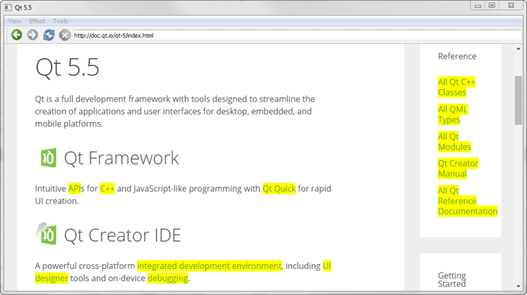

WebEngine Content Manipulation Example
Demonstrates how to load and manipulate web content.

Content Manipulation shows how to use JQuery with Qt WebEngine Widgets to create a web browser with special effects and content manipulation.
In the application, we call QWebEnginePage::runJavaScript() to execute jQuery JavaScript code. We implement a QMainWindow with a QWebEngineView as a central widget to build up the browser itself.
Running the Example
To run the example from Qt Creator, open the Welcome mode and select the example from Examples. For more information, visit Building and Running an Example.
MainWindow Class Definition
The MainWindow class inherits QMainWindow. It implements a number of slots to perform actions on both the application and on the web content:
class MainWindow : public QMainWindow { Q_OBJECT public: MainWindow(const QUrl& url); protected slots: void adjustLocation(); void changeLocation(); void adjustTitle(); void setProgress(int p); void finishLoading(bool); void viewSource(); void highlightAllLinks(); void rotateImages(bool invert); void removeGifImages(); void removeInlineFrames(); void removeObjectElements(); void removeEmbeddedElements(); private: QString jQuery; QWebEngineView *view; QLineEdit *locationEdit; QAction *rotateAction; int progress; };
We also declare a QString that contains jQuery, a QWebEngineView that displays the web content, and a QLineEdit that acts as the address bar.
MainWindow Class Implementation
We start by implementing the constructor. The first part of the constructor sets the value of progress to 0. This value will be used later in the code to visualize the loading of a web page:
MainWindow::MainWindow(const QUrl& url) { setAttribute(Qt::WA_DeleteOnClose, true); progress = 0;
Next, the jQuery library is loaded by using a QFile and reading the file content. The jQuery library is a JavaScript library that provides different functions for manipulating HTML:
QFile file;
file.setFileName(":/jquery.min.js");
file.open(QIODevice::ReadOnly);
jQuery = file.readAll();
jQuery.append("\nvar qt = { 'jQuery': jQuery.noConflict(true) };");
file.close();
The second part of the constructor creates a QWebEngineView and connects slots to the view's signals:
view = new QWebEngineView(this);
view->load(url);
connect(view, &QWebEngineView::loadFinished, this, &MainWindow::adjustLocation);
connect(view, &QWebEngineView::titleChanged, this, &MainWindow::adjustTitle);
connect(view, &QWebEngineView::loadProgress, this, &MainWindow::setProgress);
connect(view, &QWebEngineView::loadFinished, this, &MainWindow::finishLoading);
Furthermore, we create a QLineEdit as the browser's address bar. We then set the vertical QSizePolicy to fill the available area in the browser at all times. We add the QLineEdit to a QToolBar together with a set of navigation actions from QWebEngineView::pageAction():
locationEdit = new QLineEdit(this);
locationEdit->setSizePolicy(QSizePolicy::Expanding, locationEdit->sizePolicy().verticalPolicy());
connect(locationEdit, &QLineEdit::returnPressed, this, &MainWindow::changeLocation);
QToolBar *toolBar = addToolBar(tr("Navigation"));
toolBar->addAction(view->pageAction(QWebEnginePage::Back));
toolBar->addAction(view->pageAction(QWebEnginePage::Forward));
toolBar->addAction(view->pageAction(QWebEnginePage::Reload));
toolBar->addAction(view->pageAction(QWebEnginePage::Stop));
toolBar->addWidget(locationEdit);
The third part of the constructor implements two QMenu widgets and assigns a set of actions to them:
QMenu *viewMenu = menuBar()->addMenu(tr("&View"));
QAction *viewSourceAction = new QAction(tr("Page Source"), this);
connect(viewSourceAction, &QAction::triggered, this, &MainWindow::viewSource);
viewMenu->addAction(viewSourceAction);
QMenu *effectMenu = menuBar()->addMenu(tr("&Effect"));
effectMenu->addAction(tr("Highlight all links"), this, &MainWindow::highlightAllLinks);
rotateAction = new QAction(this);
rotateAction->setIcon(style()->standardIcon(QStyle::SP_FileDialogDetailedView));
rotateAction->setCheckable(true);
rotateAction->setText(tr("Turn images upside down"));
connect(rotateAction, &QAction::toggled, this, &MainWindow::rotateImages);
effectMenu->addAction(rotateAction);
QMenu *toolsMenu = menuBar()->addMenu(tr("&Tools"));
toolsMenu->addAction(tr("Remove GIF images"), this, &MainWindow::removeGifImages);
toolsMenu->addAction(tr("Remove all inline frames"), this, &MainWindow::removeInlineFrames);
toolsMenu->addAction(tr("Remove all object elements"), this, &MainWindow::removeObjectElements);
toolsMenu->addAction(tr("Remove all embedded elements"), this, &MainWindow::removeEmbeddedElements);
The last line sets the QWebEngineView as the central widget in the QMainWindow:
setCentralWidget(view);
}
When the page is loaded, adjustLocation() is triggered by the loadFinished() signal in QWebEngineView to update the address bar:
void MainWindow::adjustLocation() { locationEdit->setText(view->url().toString()); }
In changeLocation(), we create a QUrl object, and then use it to load the page into the QWebEngineView. When the new web page has finished loading, adjustLocation() will be run once more to update the address bar:
void MainWindow::changeLocation() { QUrl url = QUrl::fromUserInput(locationEdit->text()); view->load(url); view->setFocus(); }
The adjustTitle() method sets the window title and displays the loading progress:
void MainWindow::adjustTitle() { if (progress <= 0 || progress >= 100) setWindowTitle(view->title()); else setWindowTitle(QStringLiteral("%1 (%2%)").arg(view->title()).arg(progress)); } void MainWindow::setProgress(int p) { progress = p; adjustTitle(); }
This slot is triggered by the titleChanged() signal in QWebEngineView.
When a web page has loaded, the finishLoading() method is triggered by the loadFinished() signal in QWebEngineView. The method then updates the progress in the title bar and calls runJavaScript() to evaluate the jQuery library against the current web page:
void MainWindow::finishLoading(bool) { progress = 100; adjustTitle(); view->page()->runJavaScript(jQuery); rotateImages(rotateAction->isChecked()); }
This means that the JavaScript can be viewed as a part of the content loaded into the QWebEngineView, and therefore needs to be loaded every time a new page is loaded. Once the jQuery library is loaded, we can start executing the different jQuery functions in the browser.
The rotateImages() function is then called explicitly to make sure that the images of the newly loaded page respect the state of the toggle action.
The first jQuery-based function, highlightAllLinks(), is designed to highlight all links in the current webpage. The JavaScript code looks for web elements named a, which is the tag for a hyperlink. For each such element, the background color is set to be yellow by using CSS:
void MainWindow::highlightAllLinks() { QString code = QStringLiteral("qt.jQuery('a').each( function () { qt.jQuery(this).css('background-color', 'yellow') } )"); view->page()->runJavaScript(code); }
The rotateImages() function rotates the images on the current web page. This JavaScript code relies on CSS transforms. It looks up all img elements and rotates the images 180 degrees and then back again:
void MainWindow::rotateImages(bool invert) { QString code; if (invert) code = QStringLiteral("qt.jQuery('img').each( function () { qt.jQuery(this).css('transition', 'transform 2s'); qt.jQuery(this).css('transform', 'rotate(180deg)') } )"); else code = QStringLiteral("qt.jQuery('img').each( function () { qt.jQuery(this).css('transition', 'transform 2s'); qt.jQuery(this).css('transform', 'rotate(0deg)') } )"); view->page()->runJavaScript(code); }
The remaining methods remove different elements from the current web page. The removeGifImages() removes all GIF images on the page by looking up the src attribute of all the elements on the web page. Any element with a gif file as its source is removed:
void MainWindow::removeGifImages() { QString code = QStringLiteral("qt.jQuery('[src*=gif]').remove()"); view->page()->runJavaScript(code); }
The removeInlineFrames() method removes all iframe or inline elements:
void MainWindow::removeInlineFrames() { QString code = QStringLiteral("qt.jQuery('iframe').remove()"); view->page()->runJavaScript(code); }
The removeObjectElements() method removes all object elements:
void MainWindow::removeObjectElements() { QString code = QStringLiteral("qt.jQuery('object').remove()"); view->page()->runJavaScript(code); }
The removeEmbeddedElements() method removes any elements using the embed tag, such as plugins embedded on the page:
void MainWindow::removeEmbeddedElements() { QString code = QStringLiteral("qt.jQuery('embed').remove()"); view->page()->runJavaScript(code); }